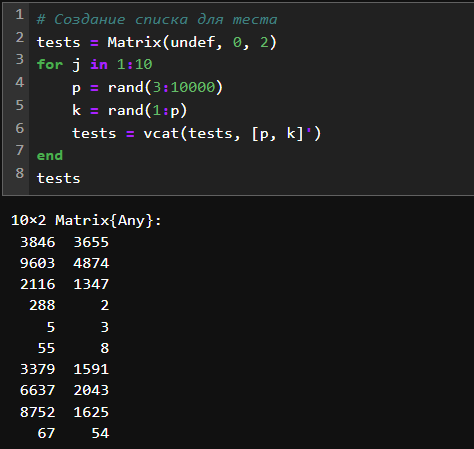
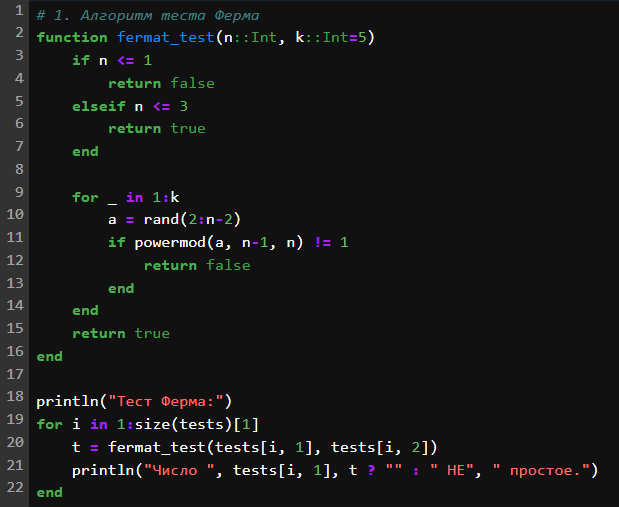
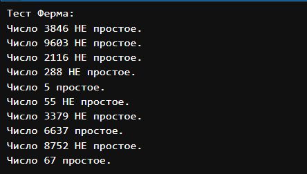
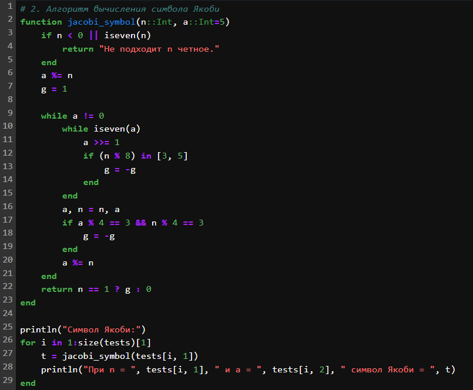
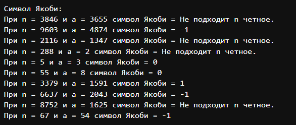
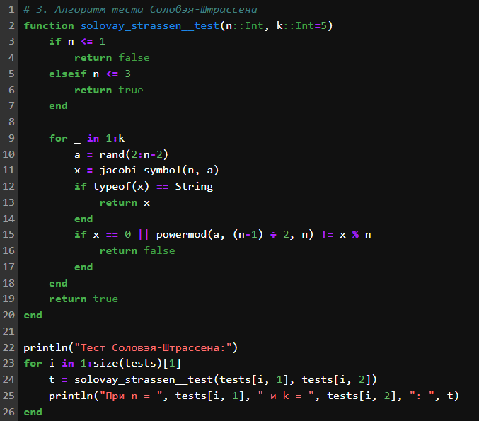
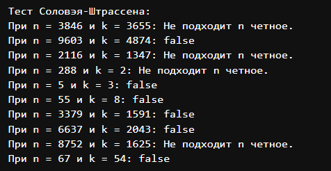
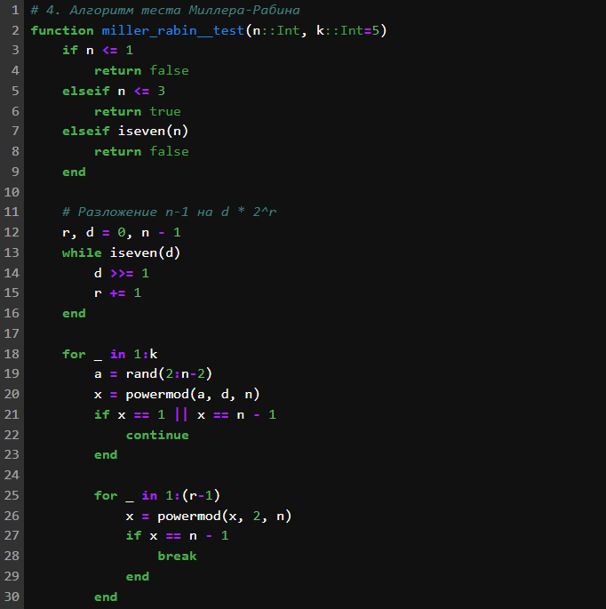
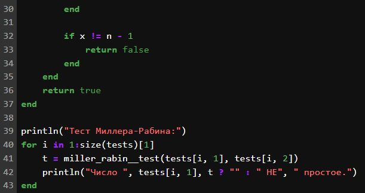
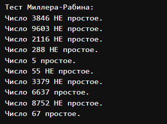

вероятностные алгоритмы проверки чисел на
простоту.
Евдокимов Максим Михайлович. Группа - НФИмд-01-24.
02 октября, 2024, Москва, Россия
Цели и задачи работы
Цель лабораторной работы
Вероятностные алгоритмы проверки чисел на простоту
Задание
Реализовать алгоритм теста Ферма.
Реализовать алгоритм вычисления символа Якоби.
Реализовать алгоритм теста Соловэя-Штрассена.
Реализовать алгоритм теста Миллера-Рабина.
Тест Ферма
Тест Ферма основан на малой теореме Ферма, которая утверждает, что
если n — простое число, то для любого целого a такого, что 1 ≤ a < n, выполняется:
an − 1 ≡ 1 mod n
Алгоритм действий:
Выбрать случайное число a
такое, что 1 ≤ a < n.
Вычислить an − 1 mod n.
Если an − 1 ≢ 1 mod n,
то n — составное.
Если an − 1 ≡ 1 mod n$,
то n вероятно простое.
Сравнение:
Плюсы: Простой и быстрый.
Минусы: Подвержен “числам Кармайкла” составным
числам, которые проходят тест для всех a.
Символ Якоби
Символ Якоби — это обобщение символа Лежандра на
случай, когда знаменатель является нечетным составным числом. Символ
Якоби $(\frac{a}{n})$ определяется для
целого числа a и нечетного
натурального числа n.
Если n — простое число, то
символ Якоби совпадает с символом Лежандра. Символ Лежандра $(\frac{a}{p})$ определяется для целого числа
a и простого числа p и указывает, является ли a квадратичным вычетом по модулю
p.
Свойства символа Якоби
Мультипликативность:
$$(\frac{ab}{n}) = (\frac{a}{n})
(\frac{b}{n})$$
Симметрия:
$$(\frac{a}{n}) = (\frac{a \mod
n}{n})$$
Квадратичный закон взаимности:
Для нечетных натуральных чисел a и b: $$(\frac{a}{b}) (\frac{b}{a}) =
(-1)^{\frac{(a-1)(b-1)}{4}}$$
Свойства для a = −1 и a = 2:
$$(\frac{-1}{n}) =
(-1)^{\frac{n-1}{2}}$$
$$(\frac{2}{n}) =
(-1)^{\frac{n^2-1}{8}}$$
Тест Соловея-Штрассена
Тест Соловея-Штрассена использует символ Якоби и малую теорему Ферма
для определения вероятности простоты числа.
Алгоритм действий:
Выбрать случайное число a
такое, что 1 ≤ a < n.
Вычислить символ Якоби $(\frac{a}{n})$.
Вычислить a(n − 1)/2 mod n.
Если $(\frac{a}{n}) \not\equiv a^{(n-1)/2}
\mod n$, то n —
составное.
Если $(\frac{a}{n}) \equiv a^{(n-1)/2}
\mod n$, то n вероятно
простое.
Сравнение:
Плюсы: Более надежный, чем тест Ферма, так как не
подвержен “числам Кармайкла”.
Минусы: Требует вычисления символа Якоби, что может
быть сложнее.
Тест Миллера-Рабина
Тест Миллера-Рабина — это вероятностный тест, основанный на
расширении малой теоремы Ферма и использующий свойства квадратичных
вычетов.
Алгоритм действий:
Представить n − 1 как
2s ⋅ d,
где d — нечетное.
Выбрать случайное число a
такое, что 1 ≤ a < n.
Вычислить ad mod n.
Если ad ≡ 1 mod n
или ad ≡ −1 mod n,
то n вероятно простое.
Иначе, вычислить a2r ⋅ d mod n
для r = 1, 2, ..., s − 1.
Если для какого-то r
выполняется a2r ⋅ d ≡ −1 mod n,
то n вероятно простое.
Если ни одно из условий не выполняется, то n — составное.
Сравнение:
Плюсы: Один из самых надежных вероятностных тестов,
не подвержен “числам Кармайкла”.
Минусы: Требует больше вычислений, чем тест
Ферма.
Вывод:
Тест Ферма — простой, но подвержен “числам
Кармайкла”.
Тест Соловея-Штрассена — более надежный, чем Ферма,
но требует вычисления символа Якоби.
Тест Миллера-Рабина — самый надежный из трех, но
требует больше вычислений.
Каждый из этих тестов дает вероятностный результат, и для
подтверждения простоты числа обычно используют несколько итераций
теста.
Ход работы
Подготовка
Так для тестирования работы кода я создал простой шаблон генерирующий
наше случайное число для проверки, а также необходимые для каждого
алгоритма коэффициент или параметр который гарантированно меньше
исходного, но не меньше 1.

Случайная тестовая группа
Алгоритм теста Ферма

Код теста Ферма
Результат 1

Результат шифра Цезаря
Алгоритм вычисления символа
Якоби
Если посмотреть на полученный результаты может показаться что при
данных значениях нет ни одного число которое при использовании теста
Соловэя-Штрассена. Для проверки рассмотрим случай номер 5 при значениях
n = 5 (число для проверки) и a = 3 (случайное число) оба при этом
оказались простыми.
Начнём с символа Якоби: 3/5; 5 - простое и совпадает с символом
Лежандра который вычисляем как 5/3 => 2/3 а, так как 2 = mod(3) и не
является квадратом по модулю 3 то 2/3 = -1 => 3/5 => -1
Теперь вычислим a(n − 1)/2 * mod n
=> 3(5 − 1)/2 * mod 5
=> 32 * mod5 = 4
Сравним: -1 и 4 не ровны значит чисто по тесту Соловея-Штрассена при
a = 3 и n = 5, n не простое. При других значениях a возможно он даст правильный ответ,
но не здесь.

Код вычисления символа Якоби
Результат 2

Результат вычисления символа
Якоби
Алгоритм теста
Соловэя-Штрассена

Код теста Соловэя-Штрассена
Результат 3

Результат теста
Соловэя-Штрассена
Алгоритм теста
Миллера-Рабина

Код теста Миллера-Рабина 1

Код теста Миллера-Рабина 2
Результат 4

Результат теста
Миллера-Рабина
Выводы по проделанной работе
Вывод
В ходе выполнения лабораторной работе выли изучены такие способы
определение простоты числа как алгоритм теста Ферма, алгоритм теста
Миллера-Рабина и алгоритм теста Соловэя-Штрассена, и алгоритм вычисления
символа Якоби.